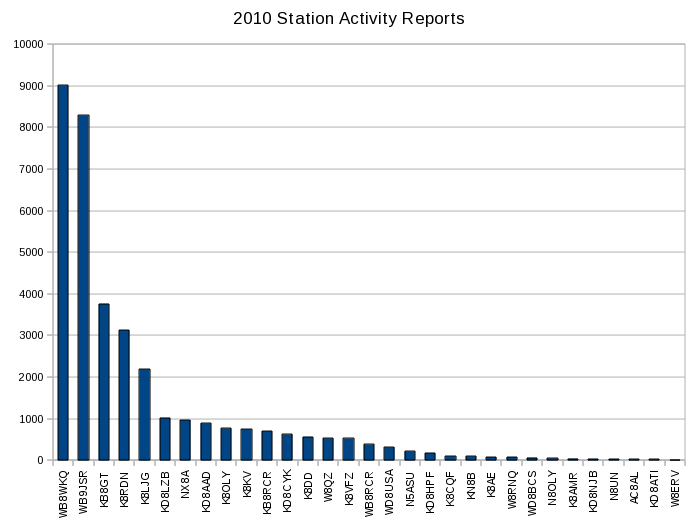
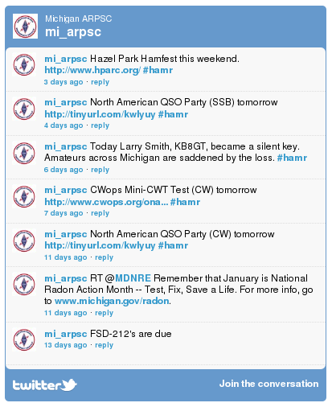

The text of and illustrations in this document are licensed by the Michigan Section of the American Radio Relay League under a Creative Commons Attribution--Share Alike 3.0 Unported license ("CC-BY-SA"). An explanation of CC-BY-SA is available at http://creativecommons.org/licenses/by-sa/3.0/. The original authors of this document designate the Michigan Section of the American Radio Relay League as the "Attribution Party" for purposes of CC-BY-SA. In accordance with CC-BY-SA, if you distribute this document or an adaptation of it, you must provide the URL for the original version.
The Michigan Section, as the licensor of this document, waives the right to enforce, and agrees not to assert, Section 4d of CC-BY-SA to the fullest extent permitted by applicable law.
The ARRL Diamond and logo, the ARES logo and the ARPSC logo are registered trademarks of the American Radio Relay League in the United States and other countries.
All other trademarks are the property of their respective owners.
Abstract
Working with state and local governments, as well as a wide variety of non-governmental agencies, Michigan amateurs participate in a wide range of public service and emergency preparedness activities. This report outlines the efforts of the 2010 calendar year.
The Michigan Amateur Radio Public Service Corps (ARPSC) is an organization of over 2,000 amateur radio operators who participate in public service and emergency response activities. These include such things as providing communications for various walks and runs, as well as reporting storm damage, participating in search and rescue efforts, and providing backup communications for public safety officers.
There are two primary programs, the Amateur Radio Emergency Services (ARES) and the National Traffic System (NTS). ARES provides "feet on the ground" for various events and incidents, while NTS provides a communications infrastructure that moves formal messages acroos the state and across the nation.
There are two other programs, associated with ARES, which do not report independently. These are RACES and SKYWARN. RACES consists of those ARES members who have been approved by their local government to operate in critical areas such as incident scenes or Emergency Operations Centers. This approval generally requires a degree of training and a background check. The Michigan Section and the Michigan State Police have published suggested RACES qualifications, but the responsibility for vetting RACES members rests with the local Emergency Management Coordinator. Most counties follow the guidelines closely.
SKYWARN members provide ground weather observations to their local jurisdictions and to the National Weather Service. SKYWARN member do not have to be ARES members, but almost always are, and most counties run SKYWARN programs as part of their ARES programs. SKYWARN observers are trained by the National Weather Service.
Together, Michigan amateurs reported over 85,000 volunteer hours during 2010 representing a value of over $1.5 million.
2. Amateur Radio Emergency Service
ARES represents the largest program. ARES has a program in each Michigan county, managed by an Emergency Coordinator who works closely with the Emergency Management Director of the county to provide backup communications to the local jurisdiction.
Because Michigan counties are so varied, the ARES organizations within those counties are quite varied. Although their primary customer is typically the county Emergency Management organization, they may also work with the local Red Cross, Salvation Army, and other NGOs. In some counties, the liaison with the fire departments or Sheriff's office is especially close. Each county has different needs, and the ARES organization attempts to meet those needs.
In Michigan, and especially southern Michigan, severe weather is common, and in many cases, the greatest effort is expended with weather related activities. Amateurs spot bad weather and report to their National Weather Service office when bad weather is approaching, and following severe weather, are often involved in recovery operations.
Late spring and early summer tend to be the time when damaging weather is encountered, and this is also the time that many organizations hold runs, walks and other events for which amateurs frequently provide communications. Hence, the peaks in the middle of the year in the graph below:
FSD-212 Results
Figure 1. Michigan ARES Hours
Michigan ARES programs reported 55,087 hours in 2010, 7035 of them occuring in June. 2010 was a very light year for damaging weather. In 2009, when the state experienced much severe weather, more than twice that effort was reported in May alone, with all the late spring/early summer months exceeding June of 2010.
2.1. Organization
The Michigan State Police divides the state into 7 Districts, and appoints a District Coordinator for each. ARES has a District Emergency Coordinator for each of those districts, who works with the District coordinator. In addition, the Section appoints a District Emergency Coordinator for each of the National Weather Service offices in the state. This NWS DEC works with the office's Warning Coordination Meteorologist to provide training to SKYWARN members and implement circuits that permit field observations to be transmitted to the NWS office effectively.
These DECs are as follows:
District
DEC Call
DEC Name
1
K8YZA
Joe Pullen
2
K8UP
John Fleming
3
N8OSL
Joe Tuscher
5
KB8FQJ
Carl Flickinger
6
KB8VEE
Tom van der Mel
7
WA8RLI
Red Duggan
8
KG8NK
Lou Gembolis
APX
KC8YTK
Chris Stinson
DTX
N8ZSA
Ted Davis
GRR
N8VLN
Michael Gage
MQT
KI8AF
Greg Hanson
Table 1. District Emergency Coordinators
In addition, the Section Emergency Coordinator maintains a small staff to help organize the section. These assistant SECs are:
Role
ASEC Call
ASEC Name
SEOC Alternate
N8ERF
Dr. Dennis Klipa
SEOC Station Manager
K8RDN
Robert Berger
Training and Exercises
NX8A
John (Jack) Hutcheson
Table 2. Assistant Section Emergency Coordinators
3. National Traffic System
Michigan's National Traffic System consists of amateurs who send messages (called "traffic") around the Section and around the nation. These amateurs are organized into a group of on the air nets that meet frequently with the intent of passing messages. These are the "unsung heros" of ARPSC; many practice their skill every day, but they operate behind the scene, out of the eye of the served agencies and the public.
The individual nets report monthly. Michigan nets send approximately 1000 messages a month. In 2010, they reported 13,848 messages passed. Not all traffic is reported, although the large number of non-reporting nets probably pass a small fraction of the messages. The chart below shows the performance across the year:
NTS Results
Figure 2. Affiliated Net Reporting
Detailed reports for the most recent month are available at http://www.mi-nts.org/netreport.php. Links on the page allow for viewing of previous reports or individual net history.
Michigan amateurs also participate in other nets. The Eighth Region net takes messages destined for out of state addresses, and collects traffic bound for Michigan to pass to Michigan representatives who will then carry those messages to the Michigan nets. The Eastern Area Net interfaces with the Region nets to move traffic among the Regions in the Eastern Area. The Transcontinental Corps arranges to move traffic between the Areas. Michigan amateurs participate in all of these, however that effort is not reflected in Michigan reporting.
3.1. Organization
The bulk of the traffic is passed through ten affiliated nets. Each net has an appointed net manager, responsible for arranging net controls and liaisons to other nets, and for reporting monthly to the Section Traffic Manager.
The affiliated nets and their net managers are:
Net
Call
Net Manager
Great Lakes Emergency and Traffic Net
WA8IAL
Jack Wiswasser
Michigan Amateur Communications System
WB9JSR
John Wehmer
Michigan ARPSC Net
WB8RCR
John McDonough
Michigan Traffic Net
WB8WKQ
Jeff Miller
Michigan VHF Traffic Net
AC8AR
Flora Jean Young
QMN, The Michigan Net
K8AE
Anne Travis
Southeast Michigan Traffic Net
WB8WKQ
Jeff Miller
Thumb and Mid-Michigan Traffic Net
K8VFZ
Grant Watson
Upper Peninsula Net
WA8DHB
Aileen Gagnon
Wolverine Single Sideband Net
K9RON
Ron Warczynski
Table 3. Net Managers
To be eligible for affiliation, a net must report regularly and maintain liaison with other National Traffic System nets.
In addition, there are perhaps 40 other nets operating within the state, approximately ten of which report regularly.
The STM has a small number of assistants who engage in projects such as liaison with other entities, training, and administrative duties:
Call
ASTM
KB8RCR
Ryan Lughermo
VE3EUI
Dennis Wilkinson
WD8USA
Joe Bell
Table 4. Assistant Section Traffic Managers
4. Individual Amateur Reporting
In addition to reporting by Emergency Coordinators and Net Managers, individual amateurs are also encouraged to make reports. There are three reports from individuals; Public Service Honor Roll, Station Activity Report, and Brass Pounder's League.
4.1. Public Service Honor Roll
The Public Service Honor Roll reporting combines activity in a number of categories. Stations get "points" for net checkins, traffic, Section level appointments, public service oriented web or other digital systems, and hours spent in public or emergency service.
If a station reports 70 points within a month, that station is listed in QST, the amateur radio journal. If a station is listed for 12 consecutive months, or for 18 months out of 24, the League will issue a certificate.
PSHR reporting for 2010 has been relatively flat across the year. The summer months tend to be higher due to bad weather and various public service events.
PSHR Results
Figure 3. Public Service Honor Roll Reporting
4.2. Station Activity Reports
Stations handling traffic are encouraged to submit Station Activity Reports (SAR) indicating the amount of traffic handled. Only 31 stations reported during 2010.
Since most of the traffic is handled by relatively few stations, and those stations tend to be the stations that report, the traffic totals reported are quite high. Stations handling a lot of traffic tend to be those stations that act as liaisons to Region or Area nets, so even though the number of stations reporting is quite small, the amount of traffic reported is considerably larger than the totals from net reports, which include only messages passed on Michigan nets. For 2010, Michigan stations individually reported 35,423 messages.

SAR Results
Figure 4. Station Activity Reports
4.3. Brass Pounder's League
Stations reporting 500 messages passed in a single month, or a total of 100 originations plus deliveries are eligible for Brass Pounder's league. This requires substantial dedication, and only a few stations achieve this award.
The stations qualifying in 2010 were:
Call
Name
Total
WB8WKQ
Jeff Miller
9010
WB9JSR
John Wehmer
8287
K8LJG
John Kroll
1285
K8CQF
Joe Turner
101
Table 5. Brass Pounder's League
5. New Media
The section utilizes a number of electronic media to communicate with members and potential members.
5.1. Electronic Mail
The Section Emergency Coordinator maintains an email list of all Emergency Coordinators and District Emergency coordinators and uses this as a primary means of direct communications with the ECs. The Section Traffic Manager maintains a similar list of Net Managers.
5.2. Web
ARPSC maintains two web sites, one for ARES and one for NTS. There is also a Section web site for more general information, and a web site maintained by the Digiral Radio Group.
Reference information concerning various digital modes, especially packet.
Table 6. Web Sites
The screenshot below shows an example page from the mi-arpsc site.
ARPSC website
Figure 5. mi-arpsc Website
In addition to the Section sites, many Districts and Nets also maintain web sites.
5.3. Blogs
The Section Emergency Coordinator also maintains a blog, however this mode has proven to be of limited utility. Much of the information that the SEC must communicate with ARPSC members has to do with the emergency planning of the State of Michigan. This information should not be widely distributed, and blogs are easily located by search engines. As a result, blog entries have been relatively sparse.
5.4. Online Social Groups
The Section also maintains two Yahoo groups, the MIARPSC group is available to all Michigan amateurs, and is often useful for a number of discussions. The MIARPSC-DEC group is private to DECs and ADECs, and is used for discussions within a smaller group.
As with websites, many Districts and nets have found it helpful to maintain their own groups, most of these also on Yahoo.
5.5. Microblogging
The section maintains two microblogging accounts; miarpsc on identi.ca and mi_arpsc on twitter.com. "Tweets" or "dents" are sent to these sites periodically to remind followers of various upcoming events. Both sites get exactly the same feed. There is also a page on the mi-arpsc web site, http://www.mi-arpsc.org/arpsc_tweets.php where those who do not follow either microblogging site may view the feed.

Twitter Feed
Figure 6. ARPSC Twitter Feed
The section tries to keep the volume to a few tweets a week to prevent followers from feeling that the feed is too burdensome. Many of the tweets use the #hamr hash tag, causing those that follow amateur radio tweets to also see the messages.
5.6. Online Meetings
Meetings within smaller groups are often held remotely. Simple phone conferences are frequently used. In addition, GoTo Meeting, and more recently, Vyew allow documents to be shared online during these phone conferences.
5.7. Wiki
The section also maintains a wiki which is used by the ARPSC leadership to develop certain plans and strategies. A wiki allows all participants to contribute asynchronously to a "document", which in many cases can be helpful.
Wiki Page
Figure 7. Example Wiki Page
The wiki is maintained on github which keeps a historical record and allows easy rollback of changes if necessary.
6. Significant Incidents
In addition to numerous local incidents, in 2010 there were two incidents that caused at least partial activation of the State EOC.
In June, a tornado went through Monroe county causing significant damage to the Village of Dundee. In addition, the tornado damaged the E. Fermi II nuclear power plant which caused activation of the SEOC. No release occurred and the public was not endangered. ARES programs in Monroe and Wayne counties responded.
In July, a pipeline in Battle Creek operated by Enbridge Inc. ruptured, spilling crude oil into the Kalamazoo River. ARES programs from Calhoun, Allegan and Kalamazoo counties responded.
In neither case was the station at the State EOC activated, however in both cases the SEC monitored the progress of the event via the State's Critical Incident Management System and was in frequent telephone and radio contact with the local programs.
7. Exercises
Local programs participate in numerous local and District-wide exercises on a regular basis. There are also a number of statewide exercises in which the Section participates.
7.1. State-sponsored exercises
The State of Michigan performs a number of drills and exercises each year, most commonly concerned with nuclear power plants. During these drills and exercises, the State EOC station is activated, the SEC or his delegate participates in the EOC, and programs in the affected counties are activated.
Date
Exercise
Counties
January 21
Palisades Drill #1
Van Buren, Allegan, Kalamazoo
February 17
Palisades Drill #2
Van Buren, Allegan, Kalamazoo
March 2
Palisades Full-scale Exercise
Van Buren, Allegan, Kalamazoo
May 12
E. Fermi II Drill #1
Monroe, Wayne
May 26
E. Fermi II Drill #2
Monroe, Wayne
June 8
E. Fermi II Full-scale Exercise
Monroe, Wayne
Table 7. Michigan State Drills and Exercises
7.2. Section Exercises
The Section also organizes statewide exercises each year. Section exercises, unlike State-sponsored exercises, tend to be functional, exercising primarily communications skills, and are developed to attempt to engage all the counties within the state.
The interface between ARES and NTS has not been as effective as it might be. Two functional drills were held in 2010, both with the intention of helping to develop that interface.
The first was held April 10. In this exercise, detailed instructions were provided to the leadership of ARES and NTS as to expectations, circuits to be used, net schedules, etc. Although there were some issues, the programs performed reasonably well.
The second was held October 2. The scenario and overall plan was the same as the April drill, however, the Emergency Coordinators and Net Managers were given much less detail. That exercise made it clear that much more practice is needed in the NTS/ARES interface.
7.3. 2011 Exercise Plans
Emergency Coordinators have consistently asked for more statewide drills, with the most common request being for four per year. There is a major statewide exercise coming up in mid-year. This is being held in conjunction with a National Level Exercise (NLE) around the New Madrid fault called NM11.
Because of the upcoming New Madrid exercise, we have some additional needs, perhaps the most significant being embracing FEMA's Homeland Security Exercise and Evaluation Program (HSEEP). For the 2011 cycle, our goals are as follows:
Timeframe
2011
Present Problems
Interface with State Agencies is weak or nonexistent
Little knowledge of contacting other state EOCs
Have not been effective in evaluating exercises
Long Range Goal
Serve effectively as a partner to State Agencies as well as local agencies.
Functional Objectives
Develop relationships with some State Agencies
Develop multiple circuits to nearby state EOCs
Learn to utilize HSEEP effectively
Table 8. 2011 Objectives
This results in a fairly aggressive schedule for 2011. Note that a number of the exercises are not statewide, but rather to exercise specific skills within a limited group.
Ex11-x1 Feb 2011
Exercise: Functional Drill
For: Saginaw county, ARES leaders
Purpose: Exercise HSEEP
Rationale: The section has no experience with the FEMA process for developing and evaluating exercises. This is intended to pilot that process. Expect a simple drill but with most of the HSEEP deliverables.
Ex11-1 Feb 2011
Exercise: Functional Drill
For: Section wide
Purpose: Prepare for NM11
Rationale: Practice skills for NM11.
Ex11-x2 Mar 2011
Exercise: TTX
For: Michigan, Indiana NTSD
Purpose: Prepare for NM11
Rationale: Work out procedures for NM11. Validate relays from SEOC to WB9JSR to NTSD to Indiana key station to Indiana SEOC.
Ex11-x3 Mar 2011
Exercise: TTX
For: SEOC, MARS
Purpose: Prepare for NM11
Rationale: Work out procedures for NM11. Validate relays from SEOC to MARS to Indiana MARS rep to Indiana SEOC.
Ex11-x4 Apr 2011
Exercise: Functional Drill
For: Michigan, Indiana NTSD
Purpose: Prepare for NM11
Rationale: Test run procedures for moving messages over NTSD from the SEOC to the SEOC of Indiana in preparation for NM11.
Ex11-x5 Apr 2011
Exercise: Functional Drill
For: SEOC, MARS
Purpose: Prepare for NM11
Rationale: Test run procedures for moving messages over MARS digital from the SEOC to the SEOC of Indiana in preparation for NM11.
NM11 May 2011
Exercise: Full Scale Exercise
For: All State Agencies
Purpose: Test interface with other states
Rationale: Involve all agencies in an exercise that involves several other states.
Ex11-3 Aug 2011
Exercise: Functional Drill
For: Section wide
Purpose: tbd
Rationale: tbd
SET 2011 Oct 2011
Exercise: Functional Exercise
For: Section wide
Purpose: tbd
Rationale: tbd
Table 9. Planned 2011 Exercises
8. Conferences
In 2010, the Section Emergency Coordinator attended two conferences sponsored by the Michigan State Police. Several Emergency Coordinators also attended these conferences.
In May, the SEC attended the State Homeland Security Conference in Grand Rapids. Topics covered included terrorism, cyber security, use of social media, and interoperable communications.
In November, the SEC was privileged to speak at the State Interoperable Communications Conference in Traverse City. This conference was attended by a large number of Emergency Management Coordinators from across the state as well as other first responders.
9. State Homeland Security Strategy
In late 2009, the SEC participated with other State Agencies in the development of the State Homeland Security Strategy. In 2010 that strategy was approved, and a number of objective coordinators were appointed to focus on the various elements of the strategy.
Of particular interest to ARPSC was Goal 2:
Enhance, implement, and sustain homeland security programs.
--Goal 2
and in particular
Annually identify planning needs to improve capabilities and address changing conditions by August 30.
--Objective 2.1
The Section has committed to contribute to the State's progress against this objective by preparing a number of planning documents. Some of these documents have been completed, and a number are scheduled for 2011.
Date
Document
Description
Responsible
2011-01-31
State Simplex Plan
Agreement on use of simplex frequencies
SEC and DECs
2011-01-31
2011 Exercise Plan
How will we respond to 2011 exercises
ASEC Training and Exercises
2011-03-31
District callout plan
Plan for each district to mobilize ECs
Each individual DEC responsible for district
2011-04-30
County callout plan
Plan for each county to mobilize members
Each individual EC responsible for county
2011-05-30
MI ARPSC Guidelines
Guidelines for participants in MI-ARPSC. Signed by SM and MSP. Requires revision and review
Bill Bond on point but heavy engagement of SM, SEC and DECs plus input from MSP
2011-06-30
Net callout plan
Plan for each net to meet for unplanned session
Each individual net manager responsible for net
2011-08-31
2012 Plans
Objective 2.1 response plans for 2012
SEC
Table 10. Targeted Documents for 2011
Because many of these documents contain sensitive information, the SEC has developed a "library" on the website where these documents can be easily found and, if necessary, password protected. DECs and Net Managers have been given password access, and it is anticipated that most ECs will also require access. Each program within the Section has a dedicated area within the library.
Library Opening Page
Figure 8. Library Opening Page
It is anticipated that documents within the library will be available in a number of formats; html for online access, pdf for printed output, ePub for portable devices, and plain text for packet BBSs and similar low-bandwidth devices.